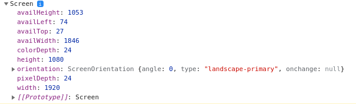

Lección 1 - Window
Definición: Es un objeto de JavaScript, el mas grande en la jerarquia. Window posee una cantidad enorme de metodos entre ellos
document. Window hace referencia a una ventana del navegador.
Algunos Metodos:
- open(): Abre una ventana nueva.
- close(): Cierra la ventana actual o la ventana en la que se llamo el metodo
- closed: Devuelve true si la ventana que llamo el metodo esta cerrada, devuelve false si la ventana esta abierta
- stop(): Cuando una ventana esta cargando, hace que esta se detenga.
- alert(): Arroja un alerta en la ventana.
- print(): Abre las opciones de impresion del navegador
- prompt(): Pide un dato y devuelve un string
-
confirm(): Imprime un texto con dos opciones aceptar y cancelar, devuelve true si aceptar es presionado
devuelve false si cancelar es presionado
Metodos de Screen y Scroll:
-
screen: es un objeto de JavaScript que posee varias propiedades de la ventana y pueden se llamadas con . object_screen = window.screen.availLeft

- screenLeft: Devuelve la distancia en pxque existe entre el borde izquierdo del navegador y el borde izquierdo de la pantalla.
- screenTop: Devuelve la distancia en px que existe entre el borde superios del navegador y el borde superior de la pantalla.
- scrollX: Devuelve la cantidad de px que hemos hecho scroll en el eje x
- scrollY: Devuelve la cantidad de px que hemos hecho scroll
-
scroll(cordX, cordY) - scrollTo(cordX, cordY): Recibe dos parametros, el scrool que se quiere hacer en X y
el scroll que se quiere hacer en Y. Esto nos rehubicara en la pantalla